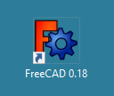
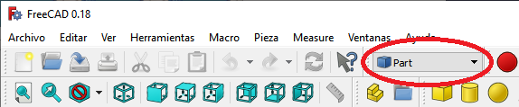
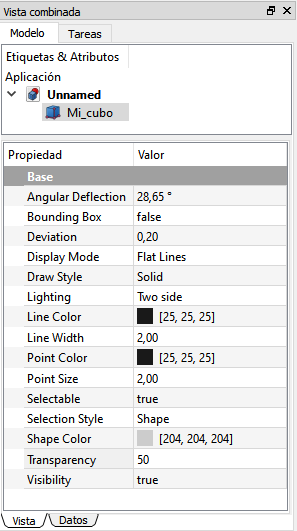
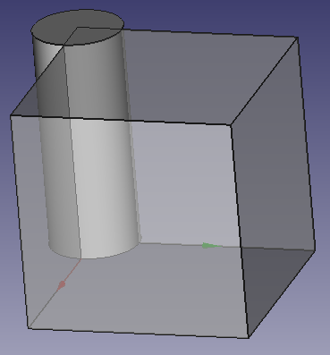
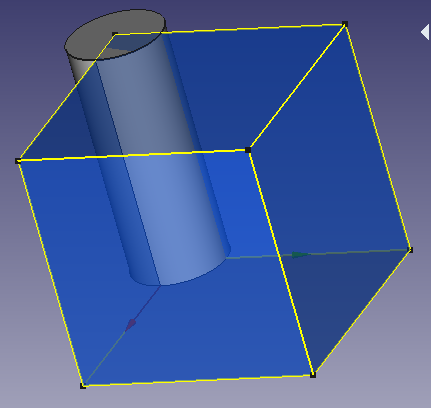

2. Visualización de piezas¶
En este tutorial vamos a cambiar las propiedades de visualización de una pieza en tres dimensiones.
Abrimos la aplicación FreeCAD que tiene el siguiente icono.
A continuación hacemos clic en el icono para crear un nuevo documento
 o bien
seleccionamos en el menú
o bien
seleccionamos en el menú Archivo... Nuevo.Se abrirá una nueva pestaña con un documento vacío, donde podemos comenzar a diseñar.
Seleccionamos el banco de trabajo Part para comenzar a diseñar objetos en 3 dimensiones.
Ahora creamos un cubo clicando el primer icono de la barra de objetos sólidos.

Cambiamos el nombre del cubo clicando con el botón derecho del ratón y seleccionando renombrar o bien clicando con el botón izquierdo del ratón y pulsando la tecla F2.

Cambiamos el nombre "Cubo" por el nuevo nombre "Mi_cubo"

Ahora, al presionar la tecla espacio el cubo desaparecerá. Si presionamos de nuevo la tecla espacio el cubo volverá a aparecer en pantalla.
Cuando el cubo es invisible, su nombre cambia a color gris.

Con esta función podemos ver las piezas ocultas que están detrás de un objeto sólido.
Otra forma de poder ver el interior de una pieza y ver a través de ella, es cambiar la propiedad de transparencia, por ejemplo, al 50%.
La propiedad de Transparencia está en la pestaña Vista.
Si ahora añadimos un Cilindro al diseño, podremos ver la nueva pieza a través del cubo.
Además de la transparencia, en la pestaña Vista se pueden cambiar otras propiedades tales como
el color de las caras de la pieza (Shape Color),
el color de las aristas (Line Color),
y el color de los vértices (Point Color).
Una propiedad útil es cambiar el tamaño de los puntos (Point Size) para que sea más sencillo seleccionarlos.
Nota
Para actualizar la imagen de la pieza en pantalla
presionamos la tecla de función F5 o bien en el
Menú Editar... Actualizar pantalla.
Ejercicios¶
Abre FreeCAD y crea un nuevo documento con un cubo y un cilindro. Cambia las propiedades del cubo para que sea transparente al 50% con las caras de color azul y las aristas de color amarillo.
